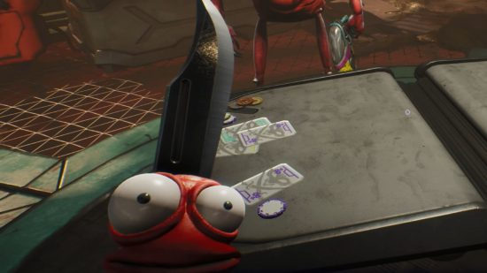
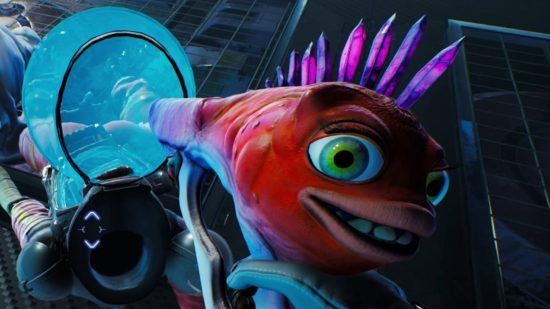
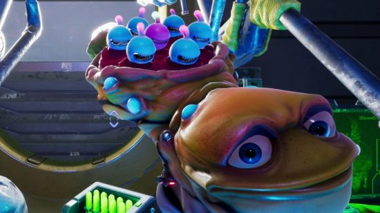
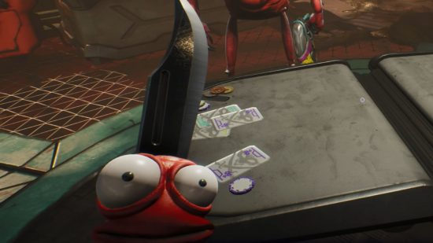
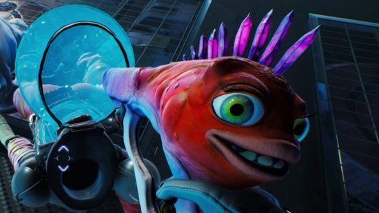
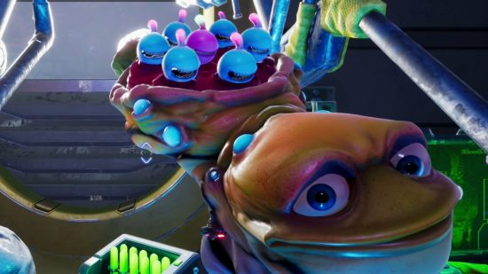

A High on Life egy komikus első személyű lövöldözős játék, akció-kaland és metroidvania elemekkel, és egy sci-fi világban játszódik, amelyben beszélő fegyverek is vannak. Justin Roiland készítette, a Squanch Games fejlesztette és adta ki. A játék 2022. december 12-én jelent meg Windowsra , Xbox One -ra és Xbox Series X/S -re .
Helyszín
A Földet megszállta a G3 kartellként ismert rosszindulatú idegen kartell, amely az őslakos lakosságot kábítószerként próbálja felhasználni. A fejvadász szerepét játszó játékosnak végig kell navigálnia a galaxist, hogy megmentse az emberiséget a gatliánusok nevű élő fegyverek segítségével, amelyeket a fenyegetés leküzdésére használnak.
Játékmenet
A High on Life egy első személyű lövöldözős videojáték akció-kaland és metroidvania elemekkel. A játékosok feladata kiválasztott célpontok meggyilkolása, és be kell küzdeniük magukat a célpont odújába, majd meg kell küzdeniük a célpontokkal a főnöki csatában.
A játékosok új képességekre tehetnek szert, és fejleszthetik meglévő képességeiket, ha frissítéseket vásárolnak az üzletekben, vagy megtalálják őket a ládákban. Ahogy a játékosok új Gatliánokat és egyéb felszerelést kapnak, lehetőség nyílik a korábban elérhetetlen területek elérésére, mint például a Metroidvaniában .
A harcon kívül a játékosok találkozhatnak bejárási és platformozási szakaszokkal, valamint a Gatliánok fegyveres képességeinek felhasználásával megoldott rejtvényekkel, valamint olyan közösségi területekkel, ahol a játékosok interakcióba léphetnek az NPC-kkel.
Fejlesztés
A High on Life teljes fejlesztése 2019-ben kezdődött, röviddel a stúdió előző címének, a Trover Saves the Universe -nak a megjelenése után . Az eredeti koncepció, amelyet Justin Roiland dolgozott ki, egy első személyű lövöldözős játék kifejlesztése volt, amely beszélő fegyvereket tartalmazott, amelyek beszélnek a játékoshoz, és reagálnak a tetteire.
Az eredeti High On Life előzetest 2022. június 12-én adták ki az Xbox és a Bethesda Games Showcase-en, a megjelenés várhatóan 2022. október. 2022. augusztus 18-án két hónapos késést jelentettek be, de ez határozta meg a megjelenést. 2022. december 12-ig, azzal az indoklással, hogy befejezzük a játék fejlesztését.
A játékban Roiland, JB Smoove , Tim Robinson , Betsy Sodaro , Steve Agee , Maurice LaMarche , Maria Bamford , Hal Lublin , Andy Daly , Jon Daly , Kevin McDonald , Mary Mack , Rich Fulcher , Thomas North Middleditch , Nolan Jennifer Hale , Wayne Pygram , Joel Haver, Alec Robbins, Dave Herman , Laura Silverman , Tara Strong ,Tom Kenny , James Urbaniak , Echo Kellum , Jack Black , Susan Sarandon , a Red Letter Media szereplői , valamint a Smiling Friends alkotói , Zach Hadel és Michael Cusack . Az eredeti zenét a Tobacco szerezte .
Justin Roiland állítólag nagymértékben részt vesz a High on Life létrehozásában . A játék eredeti koncepciójának megalkotásáért, valamint a tervezésben és fejlesztésben való részvételért elismerést kapott. Erich Mayr tervezési igazgató úgy írta le a játék stílusát, hogy " Blade Runner meets The Muppets ".
Fegyverek
Essen szó a fegyverekről is. A játék beszélő fegyverei egyedi személyiséggel is rendelkeznek. A játékosok összesen hat „Gatlians” nevű élő idegen fegyverrel támadnak, amelyek mindegyike elsődleges, alternatív és speciális „trükkös lyuk” tüzelési módokkal van felszerelve. A különleges fegyverek nem harci forgatókönyvekben is használhatók rejtvények megoldására, és bizonyos területek eléréséhez szükségesek.
 




